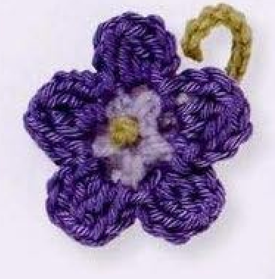
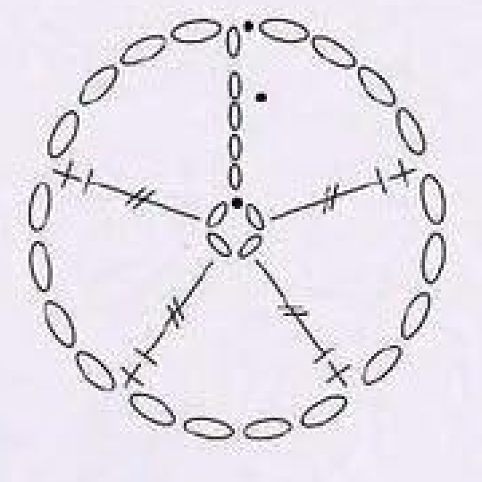
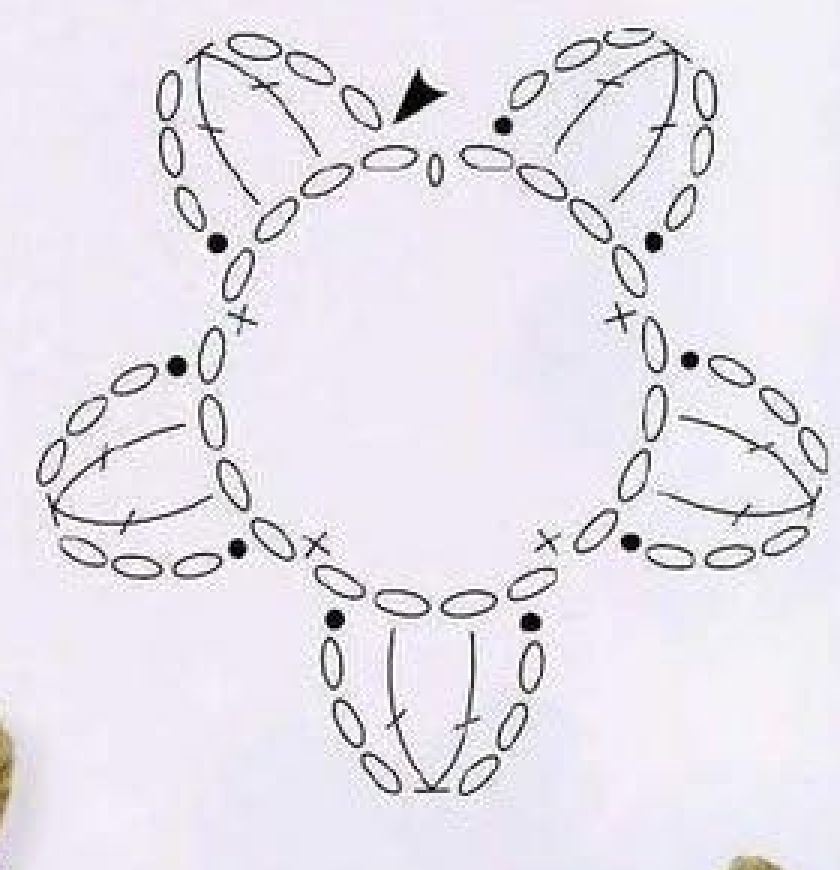
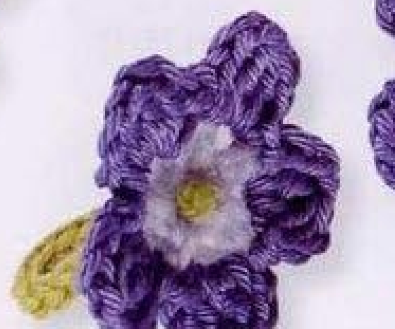
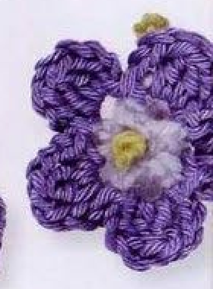
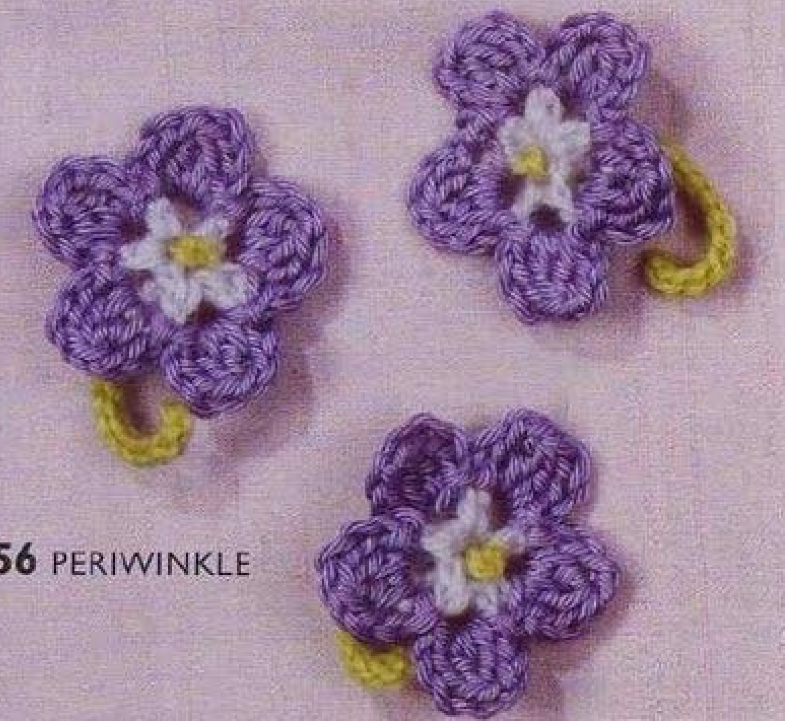

Crochet Periwinkle has five rounded deep-blue petals around a pale-blue center, with a short green stem and a small green knot at the flower’s middle. Each petal is supported by a chain loop and contains a two-stitch cluster. This guide follows pattern 56 in Lesley Stanfield’s 100 Flowers to Knit & Crochet, preserving the source’s five-part construction and stem attachment in US crochet terms.

Key Takeaways
- Use 4-ply cotton in pale blue A, deep blue B, and pale green C.
- The center begins with a four-chain ring and five counted US treble positions.
- Round 2 creates five chain loops for the petals.
- Each deep-blue petal contains a two-US-double cluster worked around a chain loop.
- Make the eleven-chain green stem separately with ten return slip stitches.
- Press petals, thread one stem end through the center, knot and trim it, then attach the stem with its other end.
CROCHET PERIWINKLE FLOWER PATTERN
Project: One five-petal cotton flower with a separately made green stem. This entry is among the book’s intermediate designs. The source recipe is translated into US terms; hook, gauge, yardage, and finished dimensions are not specified.
| Skill level | Intermediate designs in the source. Practical guidance: familiarity with tall stitches, same-loop clusters, and small-component assembly is useful. |
|---|---|
| Base size | One flower with 5 petals and a short stem. Measurements are not specified. |
| Yarn | 4-ply cotton: pale blue A, deep blue B, and pale green C. |
| Quantity, hook, gauge | Not specified. Choose a hook suited to your cotton and assess the center and petals. |
| Notions | Scissors and a blunt needle for invisible finishing and stem attachment. |
| US abbreviations | ch = chain; sc = single crochet; dc = double crochet; tr = treble; sl st = slip stitch; RS = right side. UK dc = US sc; UK tr = US dc; UK dtr = US tr. A 2-dc cluster is two partial doubles with the same chain-loop base, closed together. |
| Flower foundation | With A, ch 4 and join with a slip stitch into a ring. |
| Round 1, RS | Ch 4, work 4 tr into the ring, and sl st to the top chain of the starting ch 4. 5 counted positions. |
| Round 2 | Ch 5; [1 sc in the next tr, ch 4] 4 times. Sl st in the first chain of the opening ch 5. 5 chain loops. Fasten off. |
| Round 3, center facing | Join B in the first chain loop. Ch 3, work a 2-dc cluster around that loop, ch 3, sl st in the same loop. Work the bracketed group [sl st, ch 3, 2-dc cluster, ch 3, sl st] in each of the next 4 loops. Sl st to the first chain and fasten off invisibly. |
| Stem | With C, ch 11. Skip 1 chain and sl st in each of the next 10 chains. Fasten off invisibly. |
| Making up | Press the petals. Thread one yarn end from the stem through the flower center from below, knot it close to the flower, and trim. Use the second end to attach the stem to the flower base. Use pressing appropriate for the cotton; no temperature is specified. |
Understand the Center, Petals, and Stem
The flower is made in three rounds. The first establishes five tall positions around a small chain ring. The second makes five pale-blue chain loops. The third changes to deep blue and places one cluster petal around each loop. The green stem is a separate piece attached only after the flower is finished.
The small green detail in the finished center is made by the assembly instruction, which threads one yarn end from the stem up through the flower and knots it close to the surface. It is not an extra green crochet round. Keeping this finishing step preserves both the source appearance and the method used to connect the stem.
The photographed flower has five rounded petals and a short curved stem. The source does not add a leaf or a second layer of petals. The group photographs show several completed examples of the same motif, not stages in a tutorial. Use the two original charts to follow the center loop and petal routes.
Prepare Three Cotton Colors
Use pale blue as A, deep blue as B, and pale green as C. All three are 4-ply cotton in the source entry. Cotton’s visible yarn twist helps show the cluster stitch columns, while the contrast between the two blues makes the smaller center distinct from the petals.
No hook size, measured gauge, yardage, or finished diameter is supplied here. Select a hook that suits your cotton and inspect the first two rounds before adding petals. The chain loops need to remain accessible, and the tall center stitches should be identifiable. A sample gives useful information without turning an unmeasured entry into a promised size.
Prepare scissors and a blunt needle. The needle is needed for securing ends and threading the green stem end through the flower center. Keep both green ends available until assembly is complete. Optional markers can identify the first pale loop and the counted starting chain rise while you work.
Translate Trebles and Clusters into US Terms
The original UK double treble becomes US treble, so the first flower round uses stitches that begin with two yarn overs. UK treble becomes US double in the petal clusters, beginning with one yarn over. UK double becomes US single in the chain-loop round. These are three different stitch heights, not one repeated stitch throughout the flower.
For a US treble, yarn over twice, draw up a loop through the indicated base, then draw through two loops three times. Complete each of the four actual trebles in round 1 individually. The four-chain starting rise is counted separately as the fifth position.
For the petal’s two-double cluster, yarn over once and draw up a loop around the chain loop, then draw through two loops and leave the double unfinished. Work a second partial double around the same loop in the same way. Yarn over and draw through the remaining loops together to close the cluster top.
Cluster checkpoint: The two partial doubles share one chain-loop base. This is a same-loop cluster, not a decrease across two adjacent center stitches.
Step 1: Make the Pale-Blue Chain Ring
With A, chain four and join with a slip stitch into a ring. Keep the chains untwisted so the center can support the tall first-round stitches. This foundation is a chain ring, rather than the adjustable slip ring used in some other flowers in the book.
With the right side facing, chain four and work four US trebles into the ring. These are four complete tall stitches sharing the foundation ring, not four trebles placed individually into its chains. Join with a slip stitch into the top chain of the opening four-chain rise.
The source states five stitches for round 1: four actual trebles plus the counted rise. Mark or identify the rise before moving on. If you make five actual trebles in addition to the rise, you will have a sixth position and the next round’s four repeated anchors will no longer match the five-part center.

Step 2: Build the Five Pale-Blue Chain Loops
Start round 2 with five chains. Then work one US single crochet in the next treble and chain four. Repeat that bracketed single-and-four-chain group four times in total, advancing around the four actual trebles of round 1. Keep the chain sections open enough to work the next round around them.
Join with a slip stitch in the first chain of the opening five-chain group. The source names the first chain, rather than the last chain at the top of that group. The opening section and four repeated sections make five loops in total, providing one base for each deep-blue petal.
Fasten off the pale-blue yarn as directed. The source does not ask you to change to B within the final single crochet or continue without cutting A. Secure the pale end on the back later without pulling a chain loop closed. Count all five loops before attaching the deep-blue yarn.
Loop checkpoint: Ch 5 opens round 2, followed by four ch-4 groups. The closing slip stitch goes into the first opening chain, and the finished round has five loops.
Step 3: Make the First Deep-Blue Cluster Petal
With the center of the flower facing you, join B in the first chain loop. Chain three, work a two-US-double cluster around that loop, chain three, and slip stitch in the same loop. The opening rise, cluster, and closing chain section all belong to this first petal.
Work around the chain loop rather than inserting the cluster into one individual chain at its tip. Both partial doubles share the loop base and are closed together. Keep the chain sides distinct from the cluster stitch columns so the rounded petal can sit outward from the center.
The two three-chain sections are the sides of the petal. They do not mean that you should make three doubles on each side or add a chain after closing each partial double. Complete the cluster once, then make the closing three-chain section and anchor it back in the same loop.

Step 4: Repeat the Petal Group in Four More Loops
Move to the next chain loop and work the bracketed petal group there: slip stitch, chain three, two-double cluster, chain three, and slip stitch. Continue in each of the next four loops. The printed bracket describes this group in the next loop; all of its petal stitches belong to that loop before moving onward.
Keep one cluster per loop. There are five loop bases and five petals altogether, including the first opening petal. Do not skip a loop between petals or make two clusters in one loop to compensate for a misplaced anchor. Use the chart to check the sequence of loop attachments around the center.
After the fourth repeated petal, slip stitch to the first chain of the petal round and fasten off invisibly. Keep the final transition small and secure the deep-blue end through established stitches on the back. Avoid pulling the finishing yarn across the front of the pale-blue center.
Check the Flower Before Making the Stem
Arrange the five deep-blue petals gently around the pale center. Count five cluster tops and five loop bases. The shape may curl slightly before pressing, but the source count should be clear. If one petal is smaller, compare its three-chain sides and the two partial doubles before deciding that the yarn or hook is responsible.
Inspect the center ring and the pale round’s first-chain join. The center needs an opening through which the green stem end can later be threaded from below. Do not cover it with an invented sewn disc, extra stuffing, or a decorative bead before following the printed assembly step.
Secure the pale and deep-blue ends while keeping the center accessible. A needle can guide them through established stitches on the back, away from the open loop bases. Leave the petal shape visible rather than fastening an end by drawing several neighboring petals tightly together.

Step 5: Make the Separate Pale-Green Stem
With C, chain eleven. Skip the chain nearest the hook and slip stitch into each of the next ten chains, returning along the foundation. Count ten return slip stitches rather than measuring the stem against an assumed finished length. The entry gives a chain count but no numerical stem measurement.
Keep the return tension flexible enough that the short stem can sit beside the flower as in the photograph. Very tight slip stitches can create a rigid strip. Each return stitch draws yarn through the foundation chain and directly through the loop on the hook; it is not a row of single crochet.
Fasten off invisibly and retain both yarn ends for assembly. One will be threaded through the flower center and tied near the front, while the other will secure the stem at the flower base. Cutting either end flush before making up removes yarn that the source explicitly uses.
The Green Center Detail Comes from Assembly
The source creates the center knot from one stem yarn end, threaded through the flower from below. The second end secures the stem at the base. This finishing order explains the green center detail without adding another crochet round or a separately made green berry.
Step 6: Press the Petals Appropriately
The source directs you to press the petals before attaching the stem. Arrange the five petals so the cluster columns and chain sides remain visible. Follow care instructions for your cotton and test a suitable method on a sample if needed. No pressing temperature or blocking diameter is supplied in the entry.
Pressing should help the petals sit as a coherent five-part flower, rather than force them into a new outline. Avoid stretching one petal substantially more than the others. If a petal has the wrong stitch count, correct the stitches rather than relying on shaping to make it resemble the photograph.
Let the flower settle after any appropriate shaping before threading the stem end through the center. Keeping the components separate during this step follows the printed making-up order and makes the pale center opening easier to see. The stem itself is not directed to be pressed in this entry.

Step 7: Knot and Attach the Stem Ends
Thread one yarn end from the pale-green stem through the center of the flower from below. Knot it close to the flower and trim as the source directs. The small green knot should sit near the center surface, rather than at the end of a long strand projecting above the petals.
Use the second end to attach the stem to the base of the flower. Sew through stable crochet stitches on the back and secure the connection without pulling the center out of shape. The source does not provide an exact sewing stitch count, so focus on a firm attachment and a clean front appearance.
Inspect the front and back before completing the final trimming. The five petals should remain visible, the small green knot should be at the center, and the stem should emerge from the base. A gentle handling check can reveal whether the stem is loose while you still have yarn available to secure it.

Troubleshoot Loops, Clusters, and Assembly
There are six center positions
Check round 1: four actual US trebles are worked after the four-chain rise, which counts as the fifth position. Making five actual trebles adds one position. Correct the center before attempting to fit five loops or five petals around a six-position base.
A petal spreads across two loops
Both partial doubles of its cluster belong around one loop, and its chain sides are anchored to that same loop. Moving one partial double to the next loop changes the recipe into a decrease between bases. Review the chart and remake that petal with its single shared loop base.
The stem has no usable attachment ends
The making-up step needs both green ends. Retain them after the ten return slip stitches and invisible finish. One becomes the threaded center knot; the other is used at the base. Adding a new sewn strand can be a repair choice, but it should be recognized as a repair rather than the original sequence.
Optional Colors, Sizing, and Applique Uses
Different blue shades can be an optional color choice while preserving the pale center, deep petals, and green stem roles. Changing yarn thickness or hook affects dimensions, but the entry has no graded sizes or gauge calculation. Test a full flower and stem before promising a particular applique size.
Suggested uses include a small floral applique on a textile panel or accessory. These are added application ideas rather than separate projects in the Periwinkle entry. Position the completed motif before sewing and use stable base stitches for attachment, leaving the five petal outlines and short stem visible.
Variation guidance: Extra petals, leaves, longer stems, or a separate decorative center are adaptations. Keep the original five-loop, five-cluster flower and two-end stem attachment clear.
Periwinkle at a Glance
- 4-ply cotton in pale blue, deep blue, and pale green.
- Five counted tall center positions and five chain loops.
- One two-double cluster petal around each loop.
- Eleven-chain stem with ten return slip stitches.
- Press petals, thread and knot one stem end, then attach with the other.
Conclusion
Periwinkle combines a five-loop center with five cluster petals and a small but specific stem-finishing step. Check the center count, keep each cluster in one loop, and preserve both green ends for assembly. The compact card contains the full source recipe in US terms, while the charts show the loop and petal routes. Click the Pin to return to the pattern when you are ready to make the flower.
Source and Tags
Source: Lesley Stanfield, 100 Flowers to Knit & Crochet, pattern 56 Periwinkle. Instructions, charts, and finished-flower photographs are on printed page 75, PDF page 69; the directory group is on printed page 30, PDF page 25. Some source examples are partly cut off at scan edges. These are finished-work images, not progress photographs. The recipe is translated into US terminology and additional practical guidance is identified separately.
Crochet PeriwinkleFive-Petal FlowerCotton CrochetCluster PetalsGreen StemUS Crochet Terms